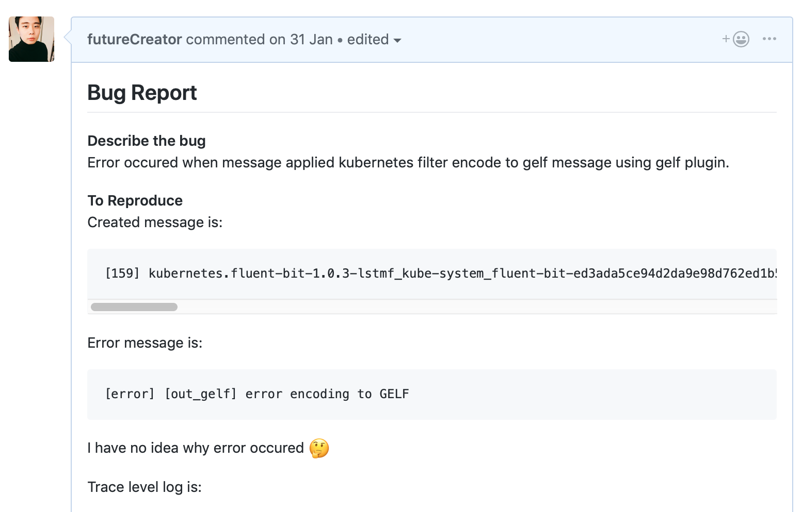
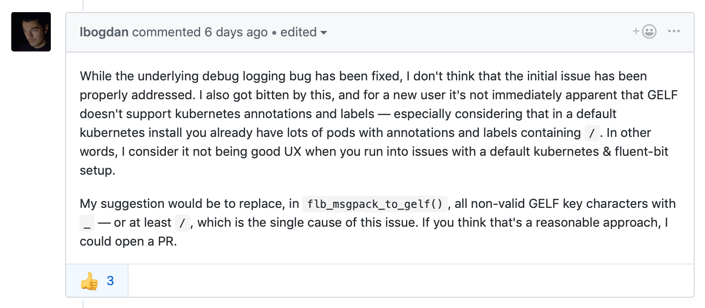
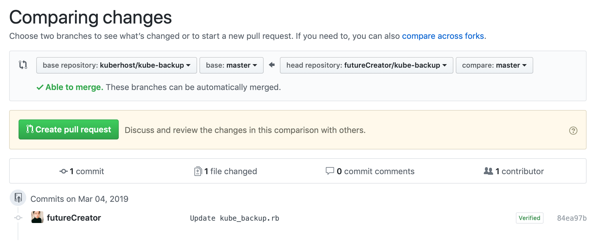
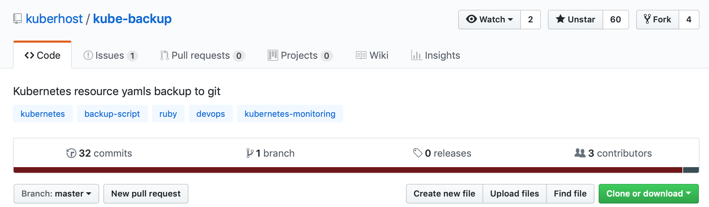
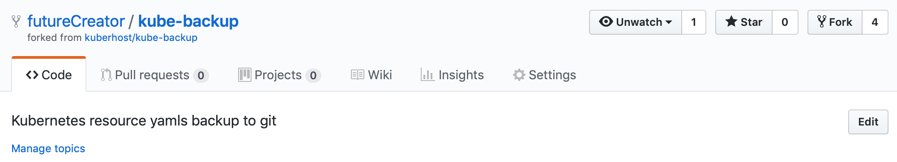

오픈 소스 컨트리뷰션을 위한 GitHub Fork & Pull Request
GitHub 에서 오픈 소스를 사용하다병면 발견한 버그를 직접 수정하거나, 새로운 기능을 추가하고 싶을 때가 있습니다. 하지만 어디서부터 어떻게 시작해야 할 지 막막하기도 합니다. 이번 포스트에서는 오픈 소스에 컨트리뷰션(기여)하는 절차를 간단히 알아보겠습니다.
1. New Issue
먼저, 사용하다가 발견한 버그나 기능에 대한 의견을 이슈(Issue)로 만들어 제기합니다. 내가 바로 처리할 수 있는 것이라도 먼저 이슈를 제기해서 다른 사람들의 의견과 동의를 구하는 것이 좋습니다. 누군가는 해당 이슈에 대해 다르게 생각할 수도 있고, 내 아이디어를 발전시켜 줄 수도 있기 때문입니다.





2. Fork
이슈를 제기했다면 다음 단계는 이슈를 해결하는 것입니다. 해당 오픈소스를 내 저장소로 복사해서 작업해야 하는데, 그럴 때 사용하는 것이 Fork 입니다. 대상 리파지토리의 상단에 Fork 버튼을 클릭하면 내 계정으로 해당 리파지토리가 복사됩니다.


포크를 하면 원래 리파지토리와 연결된 새로운 리파지토리가 생성됩니다. 이제 이 리파지토리를 로컬에 클론하고 작업하면 됩니다.
3. Clone
원격에 있는 저장소를 로컬에 복사하는 과정을 클론(Clone) 이라고 합니다. 포크한 저장소의 URL을 복사해서 로컬로 클론합니다.
1 | $ git clone https://github.com/[username]/[forked-repo-name].git |
4. Branch 생성
클론한 저장소에 브랜치(Branch)를 생성합니다. 브랜치는 독립적인 작업 공간을 제공합니다.
1 | $ git checkout -b fix-issue-[issue-number] |
5. Commit & Push
수정한 내용을 커밋하고 푸시합니다.
1 | $ git add . |
6. Pull Request
GitHub 페이지에서 Compare & pull request 버튼을 클릭합니다.
PR(Pull Request) 본문에는 해결한 이슈 번호를 남겨서 연결합니다.
1 | Fixes #[issue-number] |
7. Merge
리뷰를 거쳐 승인되면 Merge 됩니다. 축하합니다! 오픈 소스에 기여하셨습니다.

결론
오픈 소스 컨트리뷐은 생각보다 어렵지 않습니다. 작은 버그 수정이나 문서 개선부터 시작핼 수 있습니다. 중요한 것은 먼저 이슈를 제기하고 커뮤니티와 소통하는 것입니다.
오픈 소스 컨트리뷰션을 위한 GitHub Fork & Pull Request